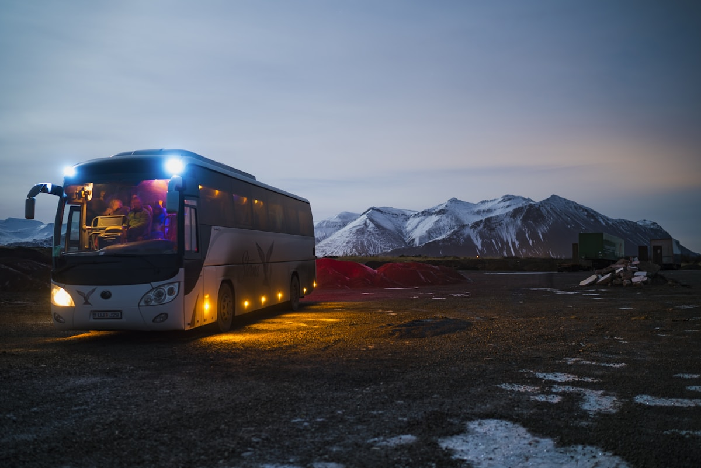

Relief route
West lot → River hub has spare capacity and can absorb overflow before the main gate fails.
Fictional demo · civic commute analytics
ClearPath turns parking arrivals, shuttle pressure, campus gates, and transit variance into a static sample brief: what is hot, what can absorb relief, and what action should happen before the queue breaks.
Route meaning
West lot → River hub has spare capacity and can absorb overflow before the main gate fails.
North garage approach is still moving, but the cutoff time is close.
Main gate is near failure; hold shuttle B and redirect arrivals now.
East spur → clinic stop stays in monitor-only mode.

Evidence board
North garage 87%
West lot 61%
South entrance 54%
East spur 38%
Open river loop −12m
Hold shuttle B −7m
Redirect arrivals −9m
Combined response −16m
Coordinator brief
Every static graph is paired with a plain-language operating note so the page feels civic and usable rather than like a trading dashboard.
Workflow
Identify which gate, garage, hub, or shuttle route needs action.
Use the color legend to decide whether to redirect, hold, or monitor.
Send the route, cutoff time, and operator action to the team before peak arrival.
Use case
Coordinate parking arrivals and employee shuttle loops.
Spot which entrance can absorb overflow before class starts.
Translate lot pressure into one plain dispatch note.
Basic package boundary
This fictional demo includes a responsive page, real local photos, SVG route map, static graphs, metadata, favicon, robots.txt, llms.txt, and direct contact links. Add-ons could include live feeds, API integration, dashboards, CMS editing, alerts, or operator login.
Sample brief
No login. No live integration. Just a decision-ready static sample your operations team can understand.